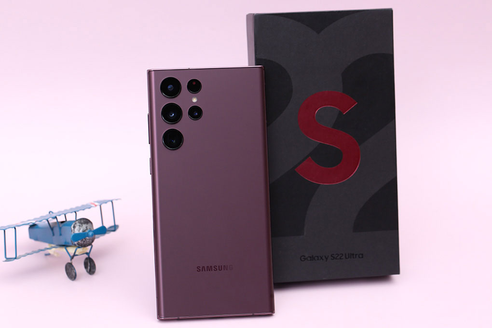
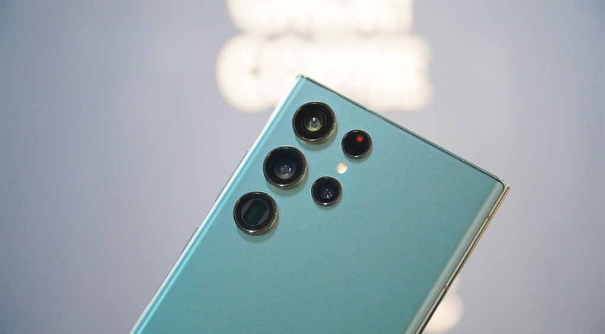
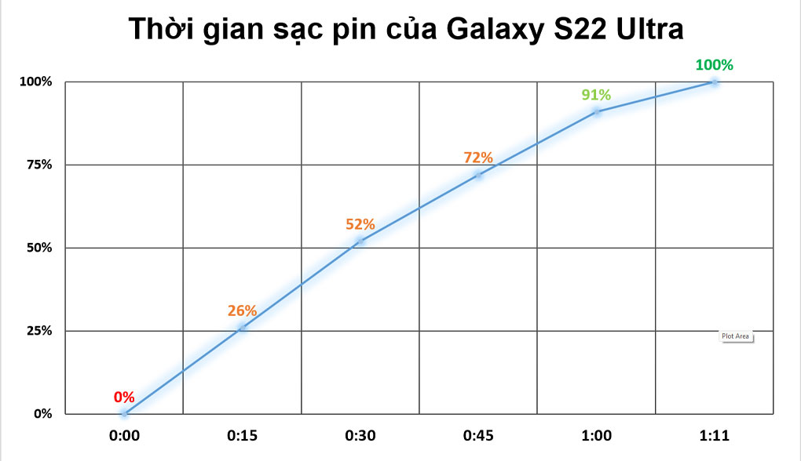
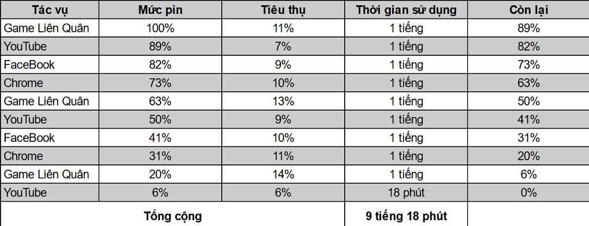

Thông tin sản phẩm
Samsung Galaxy S22 Ultra 256GB - chiếc điện
thoại Galaxy S đầu tiên sở hữu bút S Pen trong thân máy, được cung cấp
sức mạnh bởi CPU đến từ Qualcomm, sở hữu thiết kế sang trọng, màn hình
có nhiều cải tiến cùng cụm camera zoom 100x.
Thiết kế khác biệt hoàn toàn thế hệ trước
Samsung Galaxy S22 Ultra 256GB ra mắt với một diện mạo “cũ mà mới”, máy
sử dụng form thiết kế của dòng
Galaxy Note trước đây để đưa vào dòng
Galaxy S. Với hai cạnh trên và dưới vát phẳng,
hai cạnh bên được bo cong mềm mại.

Đây cũng là một chiếc smartphone vô cùng bền bỉ khi khung viền được cấu
thành từ Armor Aluminum cứng cáp, khả năng kháng bụi, nước chuẩn IP68 và
đây cũng là một trong những sản phẩm được trang bị kính Corning Gorilla
Glass Victus+ đầu tiên trên thị trường.

Mặt lưng hoàn thiện nhám, màu sắc khá sang và có khả năng hạn chế bám
vân tay tốt, máy có các phiên bản màu như: Xanh lá, đỏ rượu vang và 2
màu truyền thống là đen và bạc.
Galaxy S22 Ultra cho cảm giác cầm nắm khá thích, trọng lượng vừa phải,
không bị cấn tay nhưng nếu cầm trần thì cảm giác hơi dễ trượt vì kích
thước máy khá là lớn.

Thiết kế cụm camera trên máy cũng là một điểm nhận dạng Galaxy S22 Ultra
năm nay khác biệt so với dòng Note, cụm camera không còn quá lồi nữa
giúp cho máy không bị kênh nhiều khi đặt trên mặt phẳng.

Pin thoải mái sử dụng một ngày
Samsung Galaxy S22 Ultra trang bị viên pin 5000 mAh, công suất sạc thì
đã được nâng lên thành 45 W. Sạc từ 0-50% trong khoảng 30 phút và mất
khoảng 70 phút là đầy 100% pin.

Mình sử dụng nhiều tác vụ giải trí trong một ngày như YouTube, Facebook,
rồi test game thì máy vẫn có thời gian sử dụng liên tục lên đến hơn 9
tiếng. Quá tốt cho một chiếc flagship trang bị cấu hình mạnh và màn hình
độ phân giải cực cao như thế này.

Ngoài ra S22 Ultra còn hỗ trợ một số công nghệ sạc khác như: Sạc nhanh
không dây công suất 15 W, sạc ngược không dây 4.5 W để bạn đa dạng
phương thức sạc cho phù hợp với nhu cầu sử dụng.
Nếu bạn là một tín đồ của dòng Note, thì còn ngại ngùng gì nữa mà không
chọn ngay chiếc S22 Ultra với cây bút S Pen cùng nhiều đặc điểm của dòng
Note huyền thoại. Màn hình lớn cùng, pin trâu, cấu hình cực khỏe cũng là
một điểm mà bạn nên cân nhắc với chiếc điện thoại này.